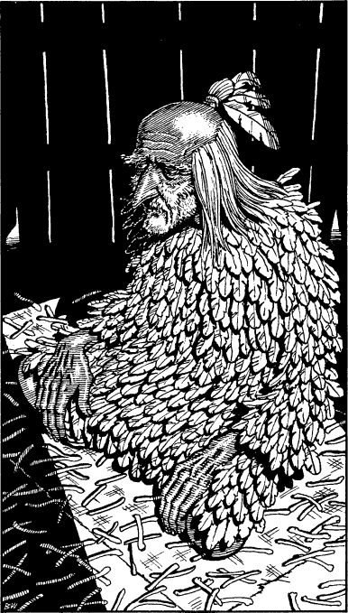

180
With a bony fist she raps loudly on the door of the hut. Inside, a croaky voice bids you enter and she tugs at your sleeve impatiently, urging you into the foul-smelling hovel. Seated on a threadbare carpet, and surrounded by what appear to be heaps of chicken bones, is a scrawny old man dressed completely in feathers. He has a long, pointed nose and a stubbly grey beard which grows to just below his beady bloodshot eyes. The crone kneels and whispers in his ear before bowing and leaving the hut. As the door swings shut the shaman scoops up a handful of bones, closes his eyes, and, with a sound like a flock of startled gulls, casts them in the air. After a full minute of chanting and waving his hands, the old man opens his eyes and looks down on the bones which lie scattered on the beaten earth floor.
‘You have many enemies, Northlander,’ he says, his hook-like fingers tracing patterns around the bones, ‘powerful enemies. They plot to prevent you from walking your chosen path, for that path will lead to their destruction. There is one who will tell you that he is a friend. You must not trust this one. There is treachery in his heart.’

The old man closes his eyes and lowers his head, as if he has fallen suddenly into a deep trance. You try to awaken him but he does not respond, and eventually you decide to take your leave. You feel unsettled by the encounter, but when you return to Banedon you make light of the incident and suggest that you continue without further delay.